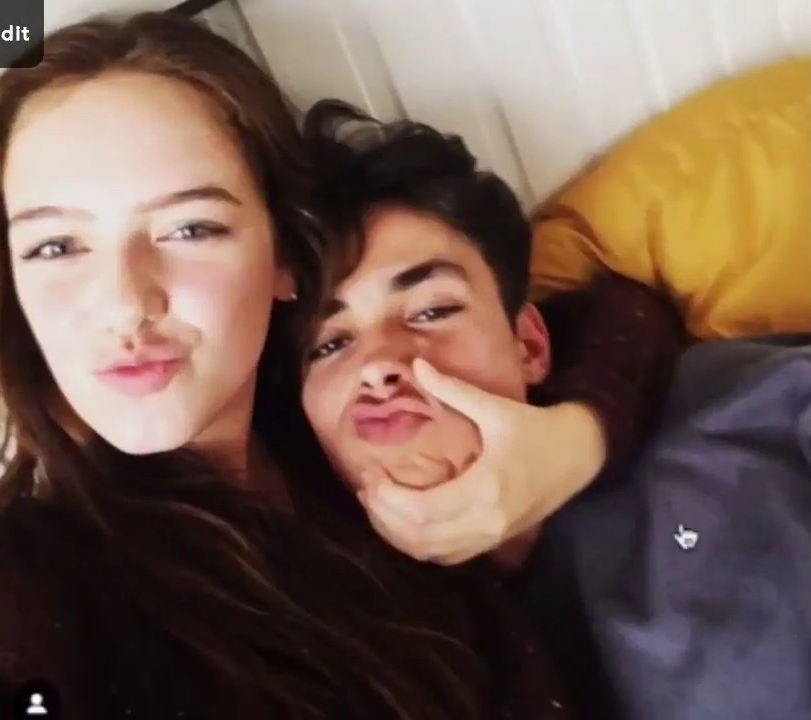
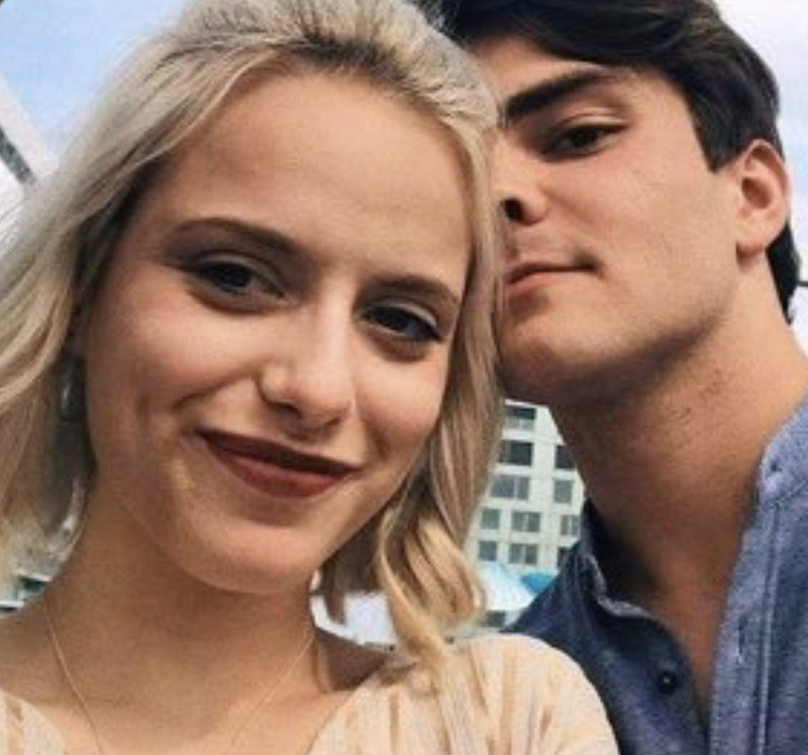
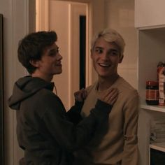
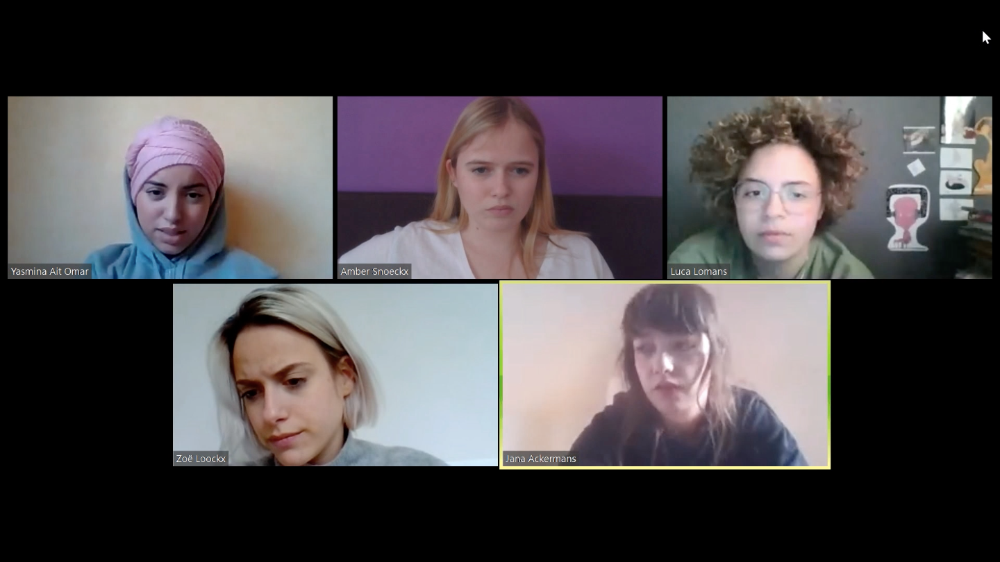
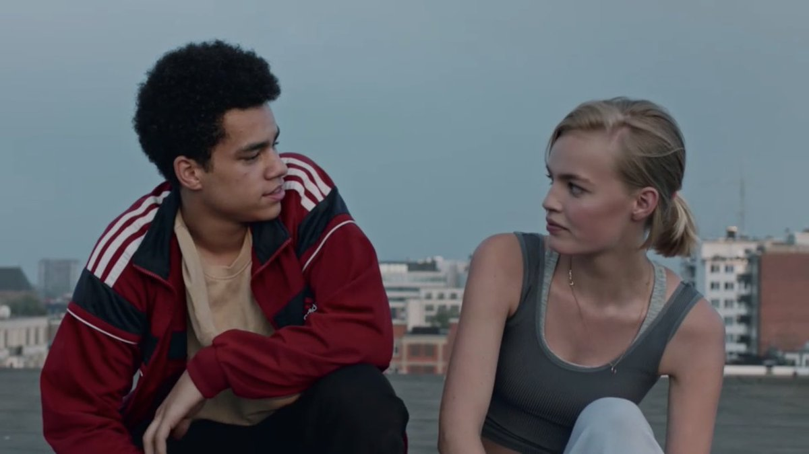
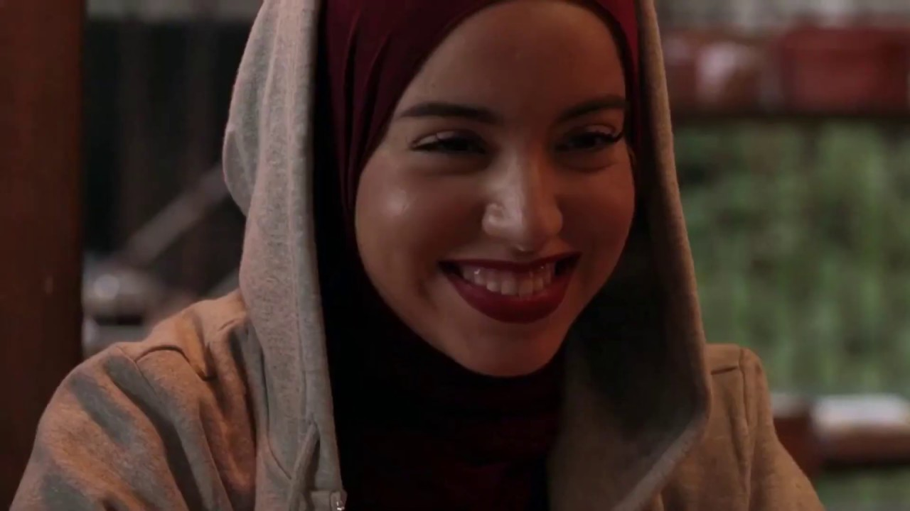

In seizoen 1 volg je het verhaal van Jana en Jens, met Jana in de hoofdrol. Jens heeft in het verleden een relatie gehad met Britt, Jana’s beste vriendin. Hij is vrienden met Robbe, Aaron en Moyo en met zijn vieren hebben ze een youtube kanaal. Jana en Britt waren beste vriendinnen, maar nadat Jana een relatie krijgt met Jens, wordt ze uit de vriendengroep gezet. Na wat aanmoedigingen van Jens gaat ze naar een feest om nieuwe mensen te ontmoeten. Dat pakt goed uit want als gevolg daarvan komt ze in de vriendengroep van Zoë, Luca, Amber en Yasmina terecht, waar ze haar plekje vindt. Met Jens lijkt ze een droomrelatie te hebben, maar niets is minder waar. Jana is erg onzeker en denkt dat Jens en Britt nog steeds contact hebben. Op een feestje waar ze teveel drinkt doet ze iets waar ze later spijt van krijgt… Komt dit nog goed?
Seizoen 2 is het seizoen van Zoë en Senne. Senne is de grootste player van de school, die elk meisje krijgt dat hij wilt. Als Senne Amber kwetst komt Zoë voor haar op. Vanaf dat moment probeert Senne een date met Zoë te regelen, wat zij elke keer ontwijkt. Na een tijdje gaat ze dan toch maar met hem op date, in de hoop om van hem af te zijn. Dit leidt tot de start van hun relatie, waarin Zoë veel twijfels blijft hebben. Ze hebben veel ups en downs. Dan wordt Zoë gechanteerd door Viktor, Sennes broer, waarmee hij door wat er in het verleden is gebeurd geen goede band heeft. Lukt het Zoë om de goede keuzes te maken?
In seizoen 3 zijn Robbe en Sander aan de beurt. Robbes moeder moet naar een inrichting en zijn vader woont ver weg, dus hij gaat bij Milan, Zoë en inmiddels ook Senne wonen. Robbe twijfelt al een tijdje aan zijn geaardheid als hij de artistieke Sander ontmoet, die op dat moment een relatie met Britt heeft. Hij bespreekt zijn struggles met Milan, die openlijk homo is. Robbe is bang om uit de kast te komen naar(?)(tegen{over}?) zijn vrienden, maar wilt wel graag een relatie met Sander, wiens gedrag onvoorspelbaar is. Nu Zoë en Senne samenwonen zijn ze constant bij elkaar, waardoor ze het steeds lastiger hebben en er meer ruzies komen. Zal de rust weer terugkeren in het appartement?
Vanwege het coronavirus moet België in lockdown. Door middel van facetime houden de tieners contact. amber en aaron hebben inmiddels een relatie en proberen erachter te komen hoe ze die overeind kunnen houden tijdens de lockdown. jana verteld dat ze naar amerika gaat verhuizen zodra ze uit quarantaine mogen. robbe en sander missen elkaar en ook het fysieke contact, hierdoor gaan ze experimenteren via videochat. zoe komt erachter dat senne een nieuwe vriendin heeft en daar baalt ze van. Sander is jarig, maar ondanks de lockdown proberen zijn vrienden er toch nog wat van te maken.
Over Kato en Moyo
Over Yasmina, moet nog komen
